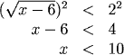
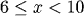
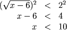
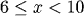
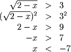

Solving Radical Inequalities
We can eliminate radicals by taking both sides of an inequality to the same power (recall that the inequality isn't changed if both sides are positive and we square them). However, as when we solve equations we must check our answers for extraneous roots.
Examples
Solve each inequality:



Solve each inequality:
1.
The expression \(\sqrt{x-6}\) is not defined unless \(x \ge 6\) , so we can limit the \(x\) values that we need to consider to \(x \ge 6\) . Also, \(\sqrt{x-6} \gt 0\), so we can square both sides of the inequality to give

However, we are only considering values of \(x\) which are 6 or larger, so the solution is

2.

Here the fact that the radical is only defined for x less than or equal to 2 does not affect our solution because any number less than -7 is clearly also less than 2. The solution is
\( x \lt -7 \)
Practice
Question 1:
Return to Main